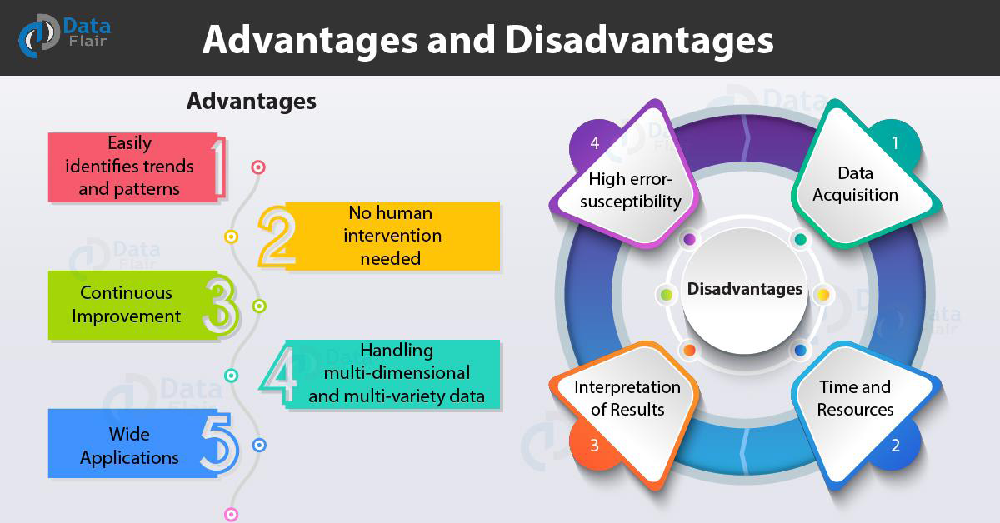

Artificial Intelligence
Links:
Negatives of AI
Besides all these positives, there are also many negatives that result from artificial intelligence
- the high cost of using, developing and formulating intelligence systems
- the lack of awareness of AI systems with ethics and human values as they are only interested in carrying out factories for it without looking at if this True or false
- Artificial intelligence systems are unable to change their system of work and develop them by receiving the same data every time and this makes them useless
- Artificial intelligence systems lack response to contemporary conditions and their inability to innovate
- dispense with workers And employees and rely on systems without the need for human
